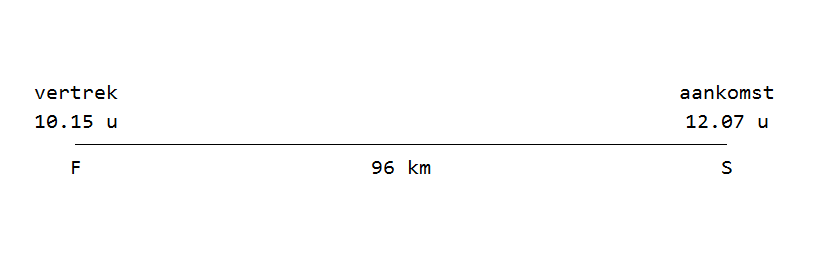
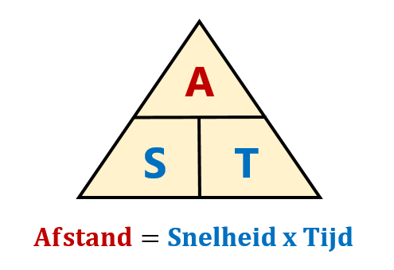
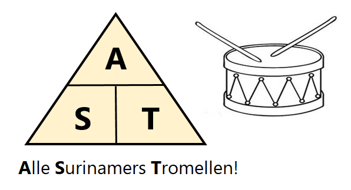
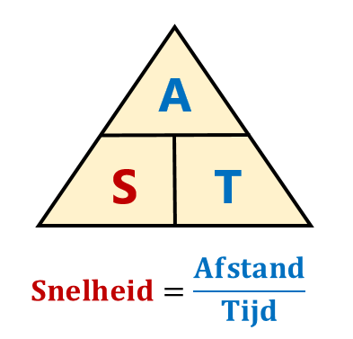
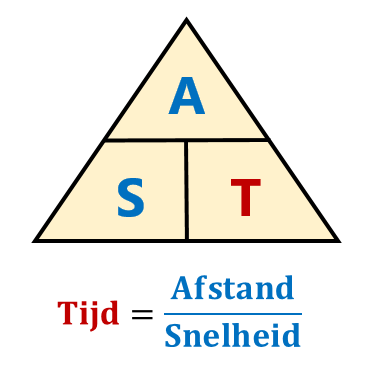
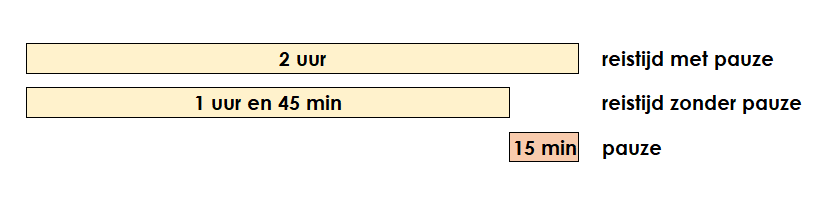
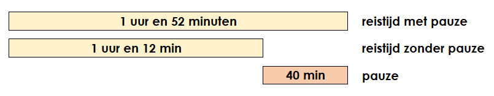

Vraag 11
Vraag

Shamir vertrok uit F met een gemiddelde snelheid van 80 km/u naar S.
Onderweg rustte hij even uit.
Hoe lang heeft hij uitgerust?
A: 32 minuten
B: 40 minuten
C: 62 minuten
D: 80 minuten
Achtergrond Informatie
Snelheid wordt vaak uitgedrukt in km/u (kilometer per uur).
Een snelheid van 80 km/u betekent dat Shamir in één uur 80 kilometer aflegt.
De meest belangrijke formule voor dit soort wegsommen is de volgende:

Een handige manier om deze formule te onthouden is:

Afstand = Snelheid : Tijd
Bijvoorbeeld, je rijdt 2 uur lang met een snelheid van 80 km/u
en je wilt weten hoeveel afstand je hebt afgelegd.
snelheid = 80 km/u
tijd = 2 uur
Dus de afstand is 80 x 2 = 160 kilometer
Als je niet de afstand maar juist de tijd of de snelheid wilt weten dan kan je dezelfde formule een klein beetje aanpassen:


Oplossing
De vraag is: hoe lang heeft Shamir uitgerust onderweg van F naar S?
Bijvoorbeeld, stel je voor dat shamir met pauze precies 2 uur onderweg was.
Maar, we kunnen berekenen dat Shamir zonder pauze eigenlijk maar 1 uur en 45 minuten nodig had om van F naar S te rijden.
Dat betekent dat hij dus 15 minuten langer dan nodig onderweg was.
In dat geval heeft Shamir dus een pauze van 15 minuten genomen.

Om de som op te lossen gaan we dus als volgt te werk:
1. Bereken hoe lang Shamir onderweg is geweest met pauze.
2. Bereken hoe lang Shamir onderweg zou zijn geweest zonder pauze.
3. Het verschil in tijd is gelijk aan de pauze die Shamir heeft genomen.
Stap 1: Bereken hoe lang Shamir onderweg is met pauze.
Shamir vertrok om 10.15 en kwam aan om 12.07 bij punt S.
Van 10:15 tot 12:00 is precies 1 uur en 45 minuten.
Van 12:00 tot 12:07 is precies 7 minuten.
Shamir is dus met pauze in totaal 1 uur en 52 minuten (want 45 + 7 = 52) onderweg geweest.
Stap 2: Bereken hoe lang Shamir onderweg zou zijn geweest zonder pauze.
We gebruiken de formule tijd = afstand : snelheid.
Afstand = 96 km
Snelheid = 80 km/u
Dus de tijd = 96 : 80
1\(\frac15\) uur is gelijk aan 1 uur en 12 minuten (want 60 : 5 = 12).
Shamir zou zonder pauze dus maar 1 uur en 12 minuten onderweg zijn.
Stap 3: Bereken het verschil tussen de twee tijden.
In stap 1 hebben we berekend dat Shamir met pauze 1 uur en 52 minuten onderweg is geweest. In stap 2 hebben we berekend dat Shamir zonder pauze maar 1 uur en 12 minuten onderweg zou zijn geweest.

Shamir was dus 40 minuten langer onderweg dan nodig.
Dat betekent dat hij een pauze heeft genomen van precies 40 minuten.
Het juiste antwoord is dus B.